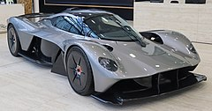

Aston Martin Valkyrie
Valkyrie to pierwszy supersamochód najwyższej klasy zbudowany przez markę Aston Martin. Nazwa samochodu nawiązuje do Walkirii z mitologii nordyckiej. Samochód został skonstruowany razem z zespołem Red Bull Racing, na co dzień działającym w wyścigach Formuły 1[1], głównie do jazdy po torze. Obrazuje to kształt nadwozia, który został podporządkowywany w pełni jak najlepszej aerodynamice samochodu. Producent uznał ten aspekt za tyle ważny, że Valkyrie posiada stosunkowo niewiele elementów upodabniających ją do innych, drogowych modeli Aston Martina - poza charakterystycznym kształtem przedniego wlotu powietrza.
Aston Martin Valkyrie napędzany jest wolnossącym silnikiem V12 o pojemności 6,5 litra i mocy 1013 KM. Jednostka napędowa jest pozbawiona turbodoładowania i charakteryzuje się bardzo wysokim maksymalnym momentem obrotowym wynoszącym 750 Nm. Silnik powstał we współpracy z firmą Cosworth, a silniki elektryczne dostarczył Rimac.